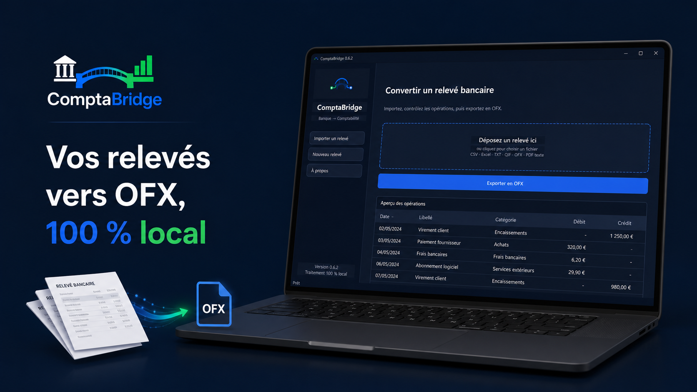
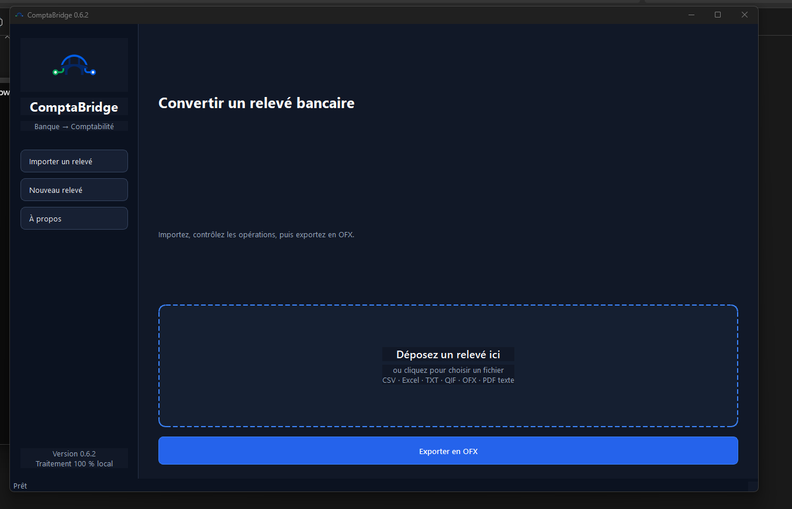

Importez
Déposez un relevé PDF texte, CSV, Excel, QIF, TXT ou OFX.
ComptaBridge extrait, contrôle et convertit vos relevés en un fichier OFX prêt à être importé dans votre logiciel comptable.

Conçu avec des retours terrain. La Release Candidate est déjà utilisée pour des imports réels dans ISACOMPTA.
Le logiciel assiste le comptable sans lui retirer le contrôle.
Déposez un relevé PDF texte, CSV, Excel, QIF, TXT ou OFX.
Vérifiez les dates, libellés, types, débits et crédits. Les anomalies sont signalées.
Générez localement un OFX structuré puis importez-le dans votre logiciel comptable.
ComptaBridge n’effectue pas une conversion silencieuse. Les lignes restent visibles et modifiables avant la création du fichier OFX.

Aucun relevé bancaire, libellé, montant ou numéro de compte n’est envoyé vers un serveur. Même le rapport de diagnostic est créé localement, anonymisé et transmis uniquement à l’initiative de l’utilisateur.
La bêta sert précisément à étendre cette couverture. Nous ne promettons pas encore une compatibilité universelle avec toutes les présentations de relevés.
Nous recherchons des professionnels manipulant régulièrement des relevés bancaires et souhaitant contribuer à une version fiable.